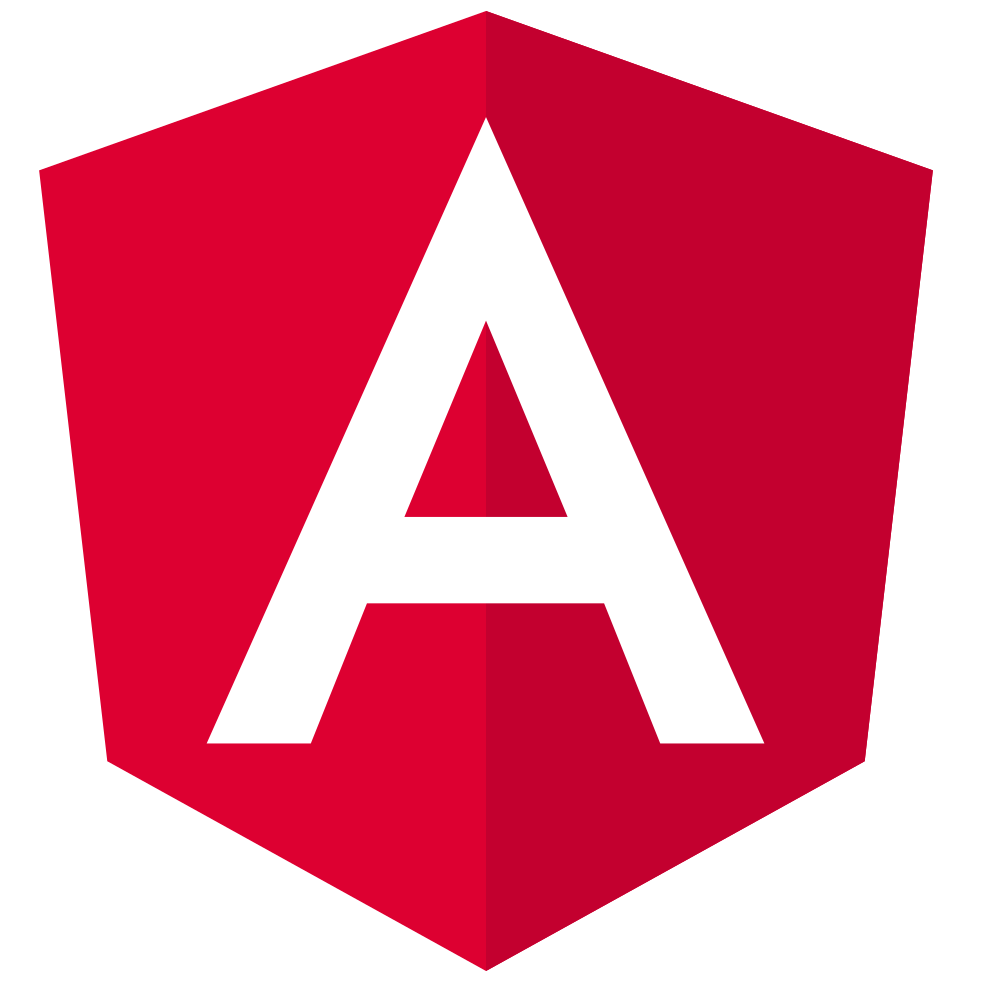
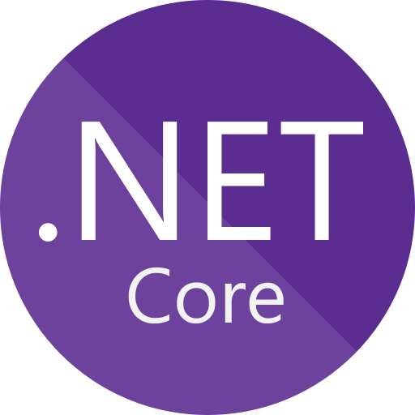
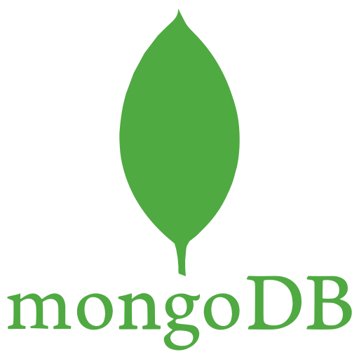
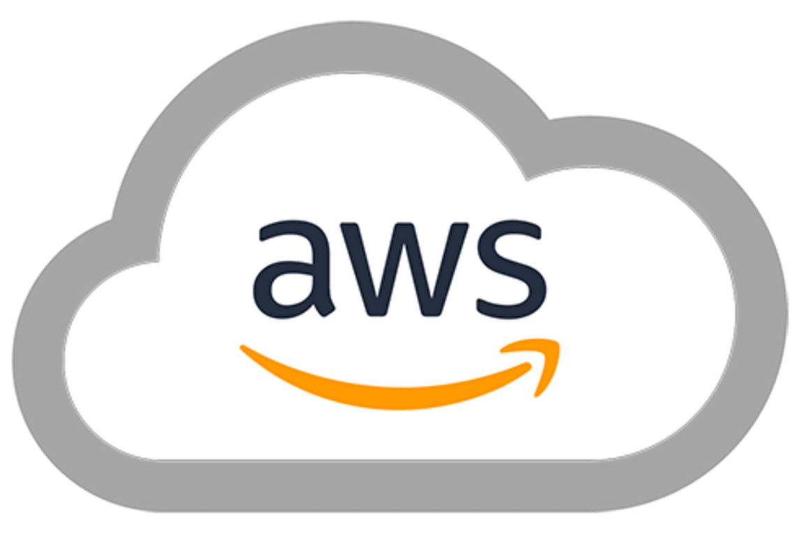
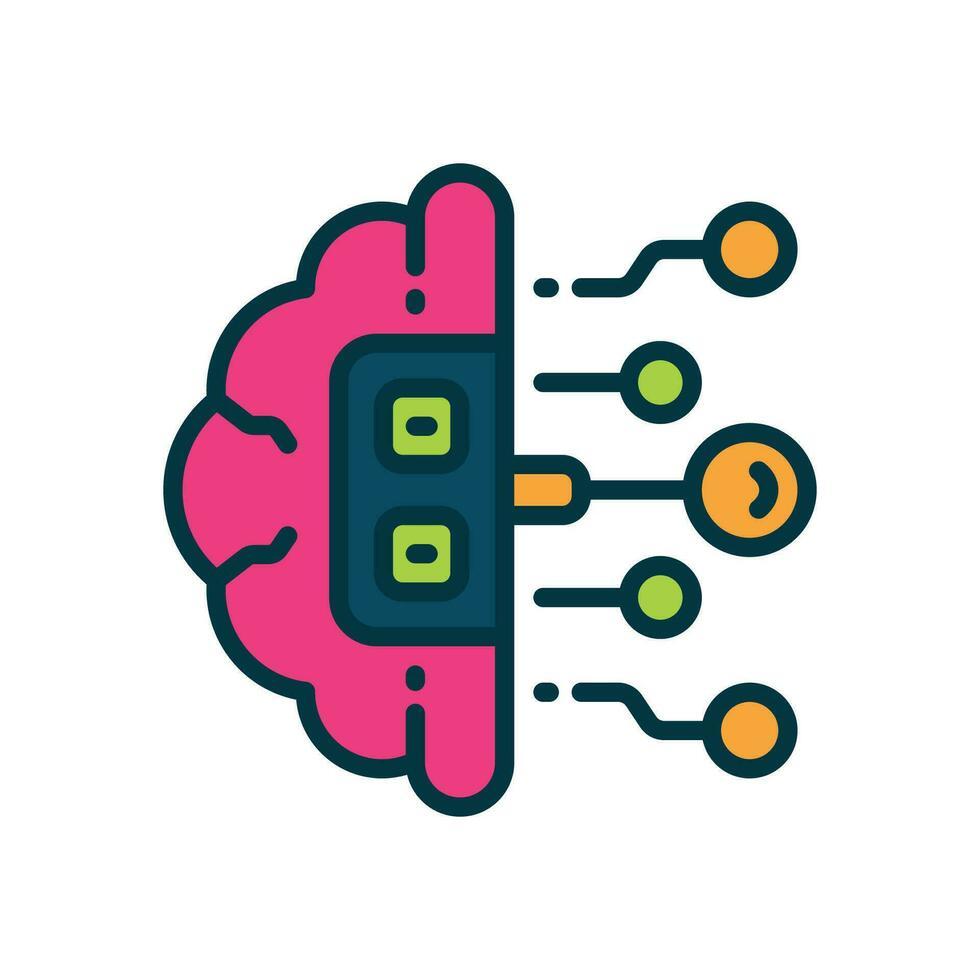
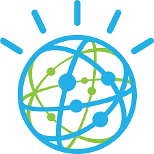
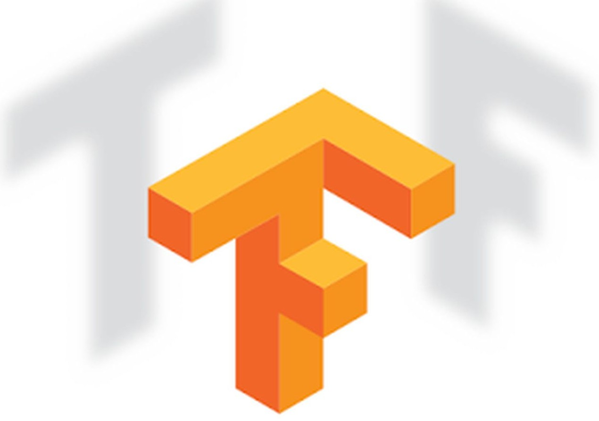

En Solutions MN utilizamos herramientas de vanguardia para desarrollar soluciones escalables, seguras y de alto rendimiento
Creamos interfaces modernas y adaptables con React.js, Angular y Vue.js, garantizando experiencias fluidas en cualquier dispositivo.



Desarrollamos núcleos robustos con Node.js, .NET y PHP, implementando las mejores prácticas de seguridad y eficiencia

Almacenamiento seguro y escalable con MySQL, PostgreSQL y MongoDB, optimizado para grandes volúmenes de información.


Despliegue optimizado con AWS, Docker y Kubernetes, garantizando escalabilidad y alta disponibilidad


Implementamos soluciones de Machine Learning y NLP con TensorFlow, OpenAI e IBM Watson, automatizando procesos y mejorando la toma de decisiones mediante modelos predictivos avanzados.


